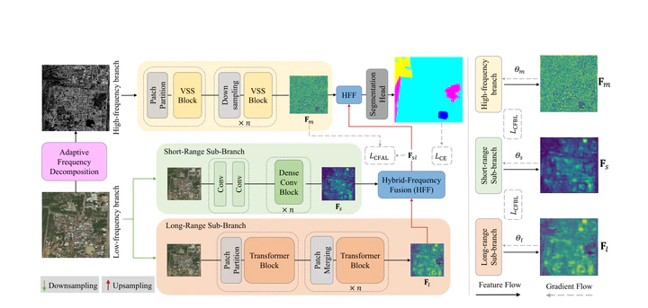
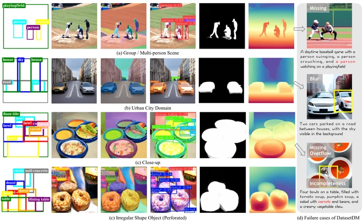
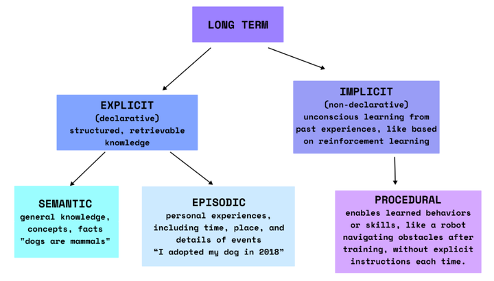

Latent reasoning
What does a model retain before it writes an answer? I work on training and testing intermediate states, including whether one state can support several follow-up questions.
Multimodal learning · Reinforcement learning
I study how models reason with language and images, and how a robot can tell when it has reasoned enough to act.
I earned my PhD in computer science at the University of Chinese Academy of Sciences and carried out postdoctoral research at Tsinghua University.

What does a model retain before it writes an answer? I work on training and testing intermediate states, including whether one state can support several follow-up questions.
I study how robot policies turn visual observations and instructions into actions, from choosing among several internal plans to deciding when to stop deliberating.
I want to pretrain models that learn from watching people and from a robot’s own attempts. My aim is for a robot to connect an instruction to the scene in front of it and anticipate how its actions will change that scene. In an unfamiliar room, it could then draw on that experience to work out how to use a new tool.
I’m interested in how robots decide what to do when something unexpected happens. If a cup is missing from its usual spot, should a robot look more closely, search elsewhere, or ask someone? I’d like it to recognize what information it needs, revise its plan as it finds new clues, and remember what worked for next time.

ACM Multimedia · 2026
MOSAIC selects an attention mechanism and a feed-forward network width for each layer of a vision-language model to meet a latency budget on the target hardware. It then uses two stages of distillation to recover model performance.

ICML · 2026
A robot policy learns to stop its internal reasoning when its state is confident enough to decode an action.

ACL · 2026
A frozen language model generates and consumes its own continuous reasoning tokens. Position-specific projections give successive thoughts distinct representations.

CVPR · 2026
Frequency-specific branches preserve fine boundaries and gather scene context before fusing their features for aerial image segmentation.

ICLR · 2026
LTPO refines latent thought vectors for each new problem using a reward derived from the model’s own output confidence.

ICLR · 2026
GeoGramBench pairs 500 geometry problems with the code that draws each diagram. One problem asks the model to find the volume of the octahedron formed by joining the centers of a rectangular prism’s faces.

AAAI · 2025 · Oral presentation
Given object categories and bounding boxes, FlexDataset generates scenes containing multiple objects along with pixel-level annotations such as segmentation masks and depth maps.

arXiv · 2026
A robot policy learns from gameplay recordings to anticipate the player’s next keyboard or mouse input and how the scene will change. We then fine-tune the policy on robot demonstrations and evaluate it on manipulation tasks in LIBERO.

arXiv · 2026
NewtonGS combines Newtonian mechanics with learned corrections to predict each object’s motion and contact with the floor. It uses the resulting poses and scales to animate objects in a 3D Gaussian scene.

arXiv · 2026
A masked diffusion language model refines each token’s representation over several decoding steps. Confidence sets the pace at each position, so the model can revise earlier predictions as the surrounding text takes shape.

arXiv · 2025
A survey of how language models store, update and retrieve information through text, key–value caches, model parameters and hidden states.